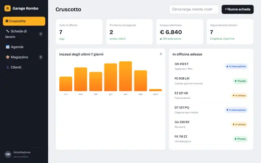

home / gestionali
// gestionali aziendali su misura
Il gestionale fatto per come lavori tu.
Ordini, magazzino, clienti, turni, commesse, assistenza, scadenze: progettiamo il software interno della tua azienda attorno ai vostri processi, non il contrario. Uno strumento unico, semplice da usare, accessibile da ufficio, magazzino o cantiere.
// ti riconosci?
Se in azienda succede questo, ti serve un gestionale.
Dieci file Excel, nessuno aggiornato
Ognuno ha la sua versione, e quando serve un dato si perde mezz’ora a cercarlo.
Gli ordini passano da WhatsApp
Messaggi, vocali, foto: qualcosa sfugge sempre, e te ne accorgi quando il cliente chiama.
Tutto è nella testa di una persona
Se è in ferie o malata, l’azienda rallenta. I processi non sono scritti da nessuna parte.
Il software che hai non si adatta
Un programma generico con cento funzioni inutili e proprio quella che ti serve mancante.
Report fatti a mano a fine mese
Numeri copiati, sommati, ricontrollati. Ore che potresti dedicare ai clienti.
Le scadenze si ricordano a memoria
Rinnovi, manutenzioni, pagamenti, certificati: nessun avviso, solo post-it.
// come è fatto un gestionale
Cinque strati, un solo strumento.
Schermate semplici, per tutti
Pensate per chi le usa ogni giorno: in ufficio, in magazzino col tablet, in cantiere col telefono. Pochi tocchi, niente manuali.
Ognuno vede ciò che gli serve
Titolare, amministrazione, magazzinieri, tecnici, collaboratori esterni: ruoli e permessi su misura, con lo storico di chi ha fatto cosa.
Il lavoro ripetitivo lo fa il software
Avvisi di scadenza, ordini ai fornitori, documenti PDF, e-mail e notifiche partono da soli quando serve.
Un database unico e protetto
Tutte le informazioni in un solo posto, sempre aggiornate, con backup automatici e accessi cifrati.
Parla con gli strumenti che usi già
Sito ed e-commerce, esportazioni per il commercialista e la fatturazione elettronica, Excel, Google Calendar, WhatsApp, e-mail.
// per qualsiasi cosa
Cosa possiamo gestire per te.
Alcuni esempi. Se il tuo processo non è nell’elenco, è esattamente il motivo per cui conviene un gestionale su misura.
Ordini e preventivi
Dal preventivo all’ordine al documento di trasporto, con stati e PDF automatici.
Magazzino
Giacenze, carichi e scarichi, codici a barre, scorte minime e riordini.
Clienti e CRM
Anagrafiche, storico, trattative, richiami: ogni contatto seguito fino in fondo.
Turni e presenze
Pianificazione del personale, ferie, permessi e ore lavorate, anche da telefono.
Commesse e cantieri
Avanzamento lavori, materiali, squadre, foto e verbali firmati sul posto.
Assistenza e ticket
Richieste dei clienti, interventi tecnici, garanzie e manutenzioni programmate.
Agenda e prenotazioni
Appuntamenti, sale, mezzi e risorse condivise, collegati al sito.
Report e cruscotti
I numeri che contano, aggiornati in tempo reale, senza copiare nulla a mano.
Area clienti
I tuoi clienti vedono ordini, documenti e stato delle pratiche in autonomia.
Documenti e scadenze
Contratti, certificati, rinnovi e pagamenti con avvisi automatici.
Mezzi e attrezzature
Manutenzioni, revisioni, assegnazioni e chilometri di furgoni e macchinari.
Il tuo processo
Raccontacelo in consulenza: se si può scrivere su un foglio, si può trasformare in software.
// provalo
Un gestionale d’officina, cliccabile.
Abbiamo costruito il gestionale di un’officina inventata, Garage Rombo: cruscotto con gli incassi, schede di lavoro da far avanzare con un clic, agenda della settimana, magazzino con i riordini e anagrafica clienti. Provalo come se fosse tuo.
Apri il gestionale d’esempio
// come lo costruiamo
Un passo alla volta, senza fermare l’azienda.
Un gestionale non si compra a scatola chiusa. Lo costruiamo con te, rilasciando le funzioni più utili per prime, così inizi a risparmiare tempo già dalle prime settimane.
- 01gratis · dal vivo o in call
Consulenza e analisi
Osserviamo come lavorate oggi, chi fa cosa e dove si perde tempo.
- 02proposta scritta
Mappa dei processi e preventivo
Disegniamo il flusso del gestionale e ti diamo tempi e costi, divisi per fasi.
- 03prima di scrivere codice
Prototipo cliccabile
Provi le schermate principali e le correggiamo insieme finché non sono naturali.
- 04a rilasci
Sviluppo e prove
Rilasciamo un modulo alla volta, importiamo i tuoi dati da Excel o dal vecchio programma.
- 05e dopo
Formazione e supporto
Spieghiamo il gestionale al tuo team e restiamo al tuo fianco per modifiche e nuove funzioni.
// sotto il cofano
Solido, sicuro, tuo.
Ovunque, su ogni schermo
Funziona nel browser da computer, tablet e smartphone, senza installare nulla. Su richiesta anche come app.
Sicurezza e GDPR
Accessi personali, connessione cifrata, backup automatici, registro delle attività. Dati trattati secondo il GDPR.
Cresce con te
Nuovi moduli, utenti e collegamenti si aggiungono quando servono, senza ricominciare da capo.
// domande sui gestionali
Domande frequenti
Quanto costa un gestionale su misura?
Dipende da quanti processi deve coprire. Proprio per questo lo dividiamo in moduli e fasi: parti da ciò che ti fa risparmiare più tempo e aggiungi il resto quando vuoi. Il preventivo è scritto e dettagliato, dopo la consulenza gratuita.
Perché non usare un software già pronto?
I programmi generici obbligano l’azienda ad adattarsi al software. Un gestionale su misura fa solo ciò che serve a voi, nel modo in cui lavorate, e può crescere senza limiti di licenze o funzioni bloccate.
Possiamo importare i dati che abbiamo già?
Sì: importiamo anagrafiche, articoli, storici e documenti da Excel, CSV o dal vecchio gestionale, così si parte senza ricopiare nulla.
Il gestionale funziona anche da telefono?
Sì, è progettato per funzionare dal browser di computer, tablet e smartphone. Chi lavora fuori sede può aggiornare dati, caricare foto e firmare documenti direttamente sul posto.
Di chi sono i dati?
Sempre vostri. Il gestionale può risiedere su un server dedicato o in cloud, con backup regolari, e potete esportare i vostri dati in qualsiasi momento.
Si può collegare al sito o all’e-commerce?
Sì: prenotazioni, ordini e richieste che arrivano dal sito possono entrare direttamente nel gestionale, senza passaggi a mano.
// il prossimo passo
Raccontaci come lavorate. Ti diciamo cosa automatizzare.
Nella consulenza gratuita, dal vivo o in videocall, individuiamo i processi che vi fanno perdere più tempo e come un gestionale può risolverli.